Chhatrapati Shivaji Maharaj is considered the father of Indian Navy. This title was given to the great Maratha Emperor in honor of his contribution to the Middle Ages’ growth of the Indian army’s naval branch. Chhatrapati Shivaji Maharaj constructed multiple naval bases near the coast after realizing the value of the naval wing.
The father of Indian Navy, Chhatrapati Shivaji Maharaj, was born on February 19, 1630, in Shivneri, Pune. Here, we will discuss the life, naval achievements, and enduring legacy of Shivaji Maharaj as a key figure in shaping the Indian Navy.
Father of Indian Navy
Chhatrapati Shivaji Maharaj is known as the father of the Indian Navy. Shivaji Maharaj’s indomitable spirit, visionary leadership, and naval accomplishments have earned him the title of the Father of the Indian Navy. His strategic vision, construction of a formidable naval fleet, emphasis on maritime strength, and establishment of naval bases set the stage for India’s naval prominence in the centuries to come. Shivaji Maharaj’s contribution to the Indian Navy remains unparalleled, making him an iconic figure who shaped India’s maritime heritage and left an indelible mark on the nation’s naval history.
Father of Indian Navy – Biography
When discussing the history of the Indian Navy, one cannot overlook the profound impact of the legendary warrior king, Chhatrapati Shivaji Maharaj. Often referred to as the “Father of the Indian Navy,” Shivaji Maharaj’s visionary strategies and maritime accomplishments laid the foundation for a robust naval force in India.
Shivaji Maharaj was born in the Maratha Empire in 1630, and he was strongly impacted by Maharashtra’s coastline region and its potential as a naval power. He envisioned the development of a potent maritime fleet to protect the Marathas’ trading interests and territories because he understood the significance of the Arabian Sea and the need for a robust naval force.
Naval Tactics of Father of Indian Navy
Shivaji Maharaj’s naval strategies were marked by innovation and adaptability. He pioneered the concept of “Guerilla Warfare at Sea,” employing swift, agile ships to launch surprise attacks on enemy vessels. He also constructed fortified naval bases along the coastline, such as Sindhudurg and Vijaydurg, which provided secure harbors for his fleet and facilitated control over sea routes.
Legacy of Father of Indian Navy
Shivaji Maharaj’s naval legacy continues to inspire the Indian Navy and maritime enthusiasts. His strategic vision and establishment of a strong naval force laid the foundation for future naval endeavors in India. His emphasis on maritime power, coastal fortifications, and naval administration created a blueprint for India’s naval growth and influence in subsequent centuries.
Shivaji Maharaj established a well-structured naval administration system to oversee the operations of the naval fleet. He encouraged maritime trade, boosting economic prosperity in his kingdom. Under his rule, efficient naval administration, maritime laws, and policies were formulated to ensure the safety of trade routes and promote maritime commerce
ACHIVEMENTS IN BATTLES
Siege of Panhala
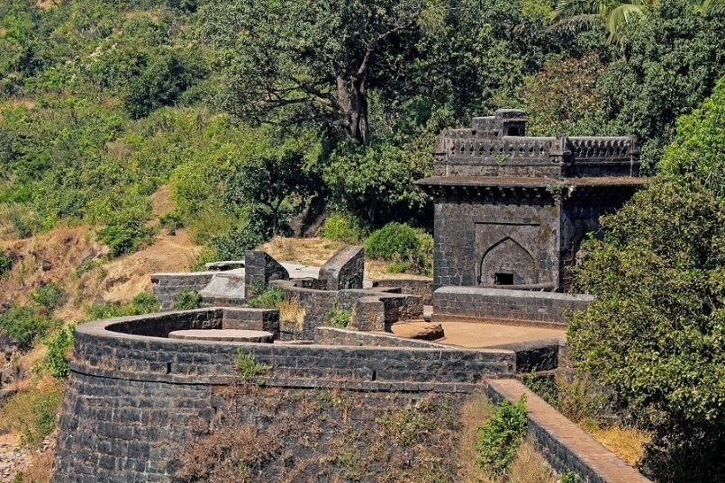
Having defeated the Bijapuri forces sent against him, Shivaji and his army marched towards the Konkan coast and Kolhapur, seizing Panhala fort, and defeating Bijapuri forces sent against them, under Rustam Zaman and Fazl Khan, in 1659. In 1660, Adilshah sent his general Siddi Jauhar to attack Shivaji's southern border, in alliance with the Mughals who planned to attack from the north. At that time, Shivaji was encamped at Panhala fort with his forces. Siddi Jauhar's army besieged Panhala in mid-1660, cutting off supply routes to the fort. During the bombardment of Panhala, Siddi Jauhar purchased grenades from the English at Rajapur, conspicuously flying a flag used by the English.
Pavan Khind
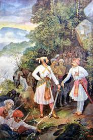
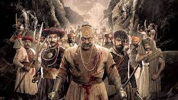
Shivaji escaped from Panhala by cover of night, and as he was pursued by the enemy cavalry, his Maratha sardar Baji Prabhu Deshpande of Bandal Deshmukh, along with 300 soldiers, volunteered to fight to the death to hold back the enemy at Ghod Khind ("horse ravine") to give Shivaji and the rest of the army a chance to reach the safety of the Vishalgad fort.
Baji Prabhu Deshpande was wounded but continued to fight until he heard the sound of cannon fire from Vishalgad,signalling Shivaji had safely reached the fort, on the evening of 13 July 1660.Ghod Khind (khind meaning "a narrow mountain pass") was later renamed Paavan Khind ("sacred pass") in honour of Bajiprabhu Deshpande.
Arrest in Agra and escape
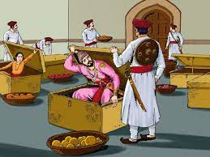
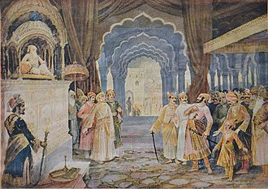
20th century depiction by M.V. Dhurandhar of Raja Shivaji at the court of Mughal Badshah, Aurangzeb.
In 1666, Aurangzeb summoned Shivaji to Agra (though some sources instead state Delhi), along with his nine-year-old son Sambhaji. Aurangzeb planned to send Shivaji to Kandahar, now in Afghanistan, to consolidate the Mughal empire's northwestern frontier. However, on 12 May 1666, Shivaji was made to stand at court alongside relatively low-ranking nobles, men he had already defeated in battle.Shivaji took offence, stormed out,and was promptly placed under house arrest. Ram Singh, son of Jai Singh, guaranteed custody of Shivaji and his son.Shivaji's position under house arrest was perilous.
Combat with Afzal Khan
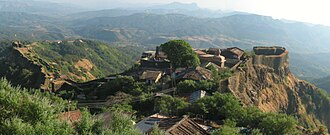
The Bijapur sultanate was displeased with their losses to Shivaji's forces, with their vassal Shahaji disavowing his son's actions. After a peace treaty with the Mughals, and the general acceptance of the young Ali Adil Shah II as the sultan, the Bijapur government became more stable, and turned its attention towards Shivaji.In 1657, the sultan, or more likely his mother and regent, sent Afzal Khan, a veteran general, to arrest Shivaji. Before engaging him, the Bijapuri forces desecrated the Tulja Bhavani Temple, a holy site for Shivaji's family, and the Vithoba temple at Pandharpur, a major pilgrimage site for Hindus.Pursued by Bijapuri forces, Shivaji retreated to Pratapgad fort, where many of his colleagues pressed him to surrender
Attacks on Shaista Khan and Surat
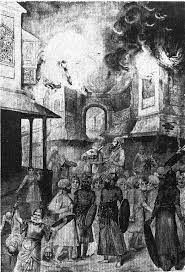
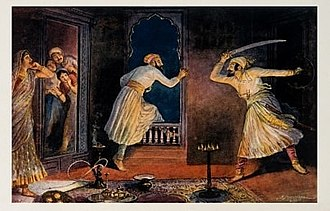
A 20th century depiction of Shivaji's surprise attack on Mughal general Shaista Khan in Pune .
At the request of Badi Begum of Bijapur, Aurangzeb, now the Mughal emperor, sent his maternal uncle Shaista Khan, with an army numbering over 150,000, along with a powerful artillery division, in January 1660 to attack Shivaji in conjunction with Bijapur's army led by Siddi Jauhar. Shaista Khan, with his better equipped and well provisioned army of 80,000 seized Pune. He also took the nearby fort of Chakan, besieging it for a month and a half before breaching the walls.
Treaty of Purandar
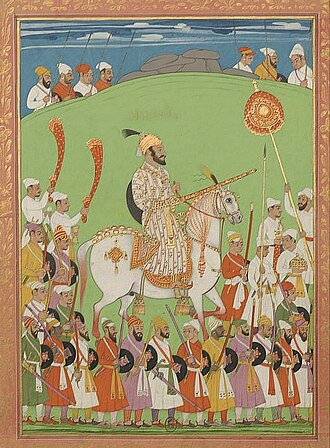
The attacks on Shaista Khan and Surat enraged Aurangzeb. In response, he sent the Rajput general Jai Singh I with an army numbering around 15,000 to defeat Shivaji.Throughout 1665, Jai Singh's forces pressed Shivaji, with their cavalry razing the countryside, and besieging Shivaji's forts. The Mughal commander succeeded in luring away several of Shivaji's key commanders, and many of his cavalrymen, into Mughal service. By mid-1665, with the fortress at Purandar besieged and near capture, Shivaji was forced to come to terms with Jai Singh.In the Treaty of Purandar, signed by Shivaji and Jai Singh on 11 June 1665, Shivaji agreed to give up 23 of his forts.
SHIVAJI MAHARAJ ACHIVEMENTS OF SOLDIER
Bahirji Naik
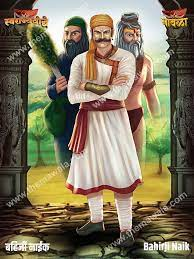
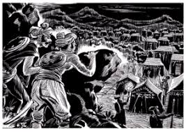
Bahirji Naik, (original name Bhairavnath Jadhav), was a 17th century Maratha spy and head of intelligence department in the army of Shivaji. Bahirji was honoured with title of "Naik"by King Shivaji due to his great work.His tomb is currently situated on Bhupalgad in Khanapur taluka of Sangli district. He was born in the village of Shingave Naik, Ahmednagar. In 1592, Bahirji's son, Tukoji Naik, built Ram Mandir and the outer border of the Shingave village. A stone bearing an inscription of his name is kept in the Ram Mandir.
Hambirrao Mohite
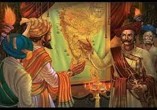
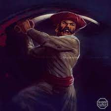
Hambirrao Mohite (1630–1687), also known as Hansaji, was a prominent Maratha general who held the esteemed position of the 5th Senapati of the Maratha Army during the reign of Chhatrapati Shivaji.He was recognized for his exceptional military prowess and successfully led various campaigns on behalf of Shivaji, subsequently continuing his service under Chhatrapati Sambhaji.Hambirrao's true name was Hansaji, and the title Hambir Rao was bestowed upon him by Chhatrapati Shivaji in 1674.
Baji Prabhu Deshpande
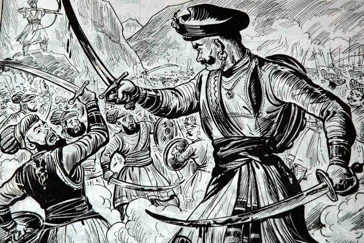
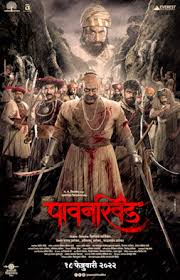
Baji Prabhu Deshpande 13 July 1660 was a general of the Maratha Army. He is known for his role in the Battle of Pavan Khind at Ghod Khind, where he sacrificed his life defending Shivaji Maharaj from incoming Adil Shahi forces of Siddi Johar.He also was a landlord or Vatandar in the Maval region.[citation needed] A 20th century depiction of Baji Prabhu with Shivaji at Pavan Khind by M.V. Dhurandhar.hivaji Maharaj continued to push into the Bijapur territory, after defeating Afzal Khan and the rout of the Bijapur army at Pratapgad.
Tanaji Malusare
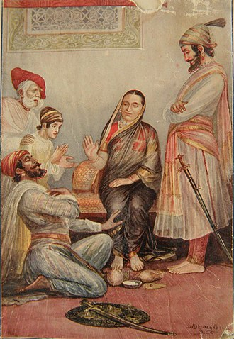
The Treaty of Purandar (June 1665) had forced Shivaji Maharaj to surrender 23 forts to the Moghuls, including Sinhagad. The treaty hurt the pride of the Marathas. None felt the sting more deeply than Jijabai, the mother of Shivaji Maharaj, who was in a way the mother of the kingdom. Shivaji Maharaj, however deeply he loved his mother, could not fulfill her wish, because the conquest was considered virtually impossible, with the fortifications and select Rajput, Arab and Pathan troops guarding it.
Moropant Pingle
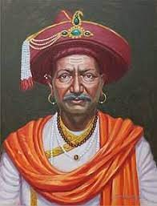
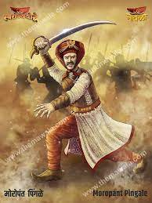
He was one of the warriors who participated in the successful 1659 battle of Shivaji Maharaj's forces against the forces of Bijapur's Adil Shah which immediately followed Adil Shah's general Afzalkhān's death at Jāwali. He also participated in the battles at Trimbakeshwar Fort and Wāni-Dindori against the Mughal Empire. He participated in Shivaji's invasion of Surat in 1664. He also participated in the Battle of Salher Moropant surrounded and attacked the 25,000 strong Mughal infantry at Salher with his 20,000 infantry.
Yesaji Kank
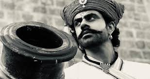
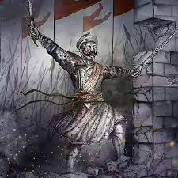
Yesaji Kank was the commander-in-chief of the Maratha army for 30 years, only spending 22 days at home during that time. He was known for his bravery, honesty, and patriotism. His main responsibilities included maintaining discipline in the infantry and implementing administrative methods in newly acquired areas.Yesaji Kank was a childhood comrade of Shivaji, who was the founder of the Maratha Empire. Kank was born in the foothills of Rajgad. Yesaji was one of the most trusted partners that Maharaj had.


 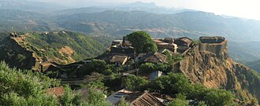
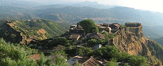 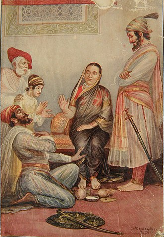
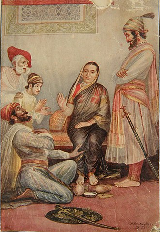